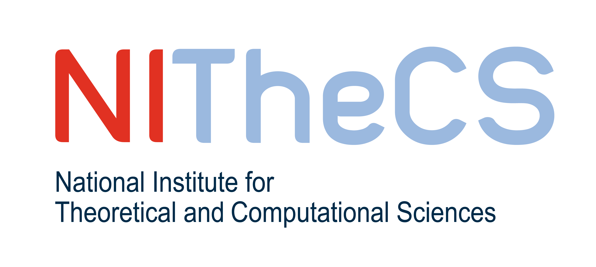

The Little Typer reading group (Stellenbosch 5 March 2025)

Join our Discord
The Little Typer provides an introduction to the field of writing programs that are proofs. It explains all the foundational concepts you will need to write proofs in Proof Assistants or program in a Dependently Typed Programming Language. Examples of these languages include: Lean, Idris, Agda and Coq. These tools allow us to not only prove that our critical code is correct, but also to write mathematical proofs that are automatically checked, so we can collaborate with other authors on github. If you would like a larger taste of the topic, see our blog post or video:
Requirements
Anyone can join, if you meet the following requirements:
- You have had some experience using recursion in the past.
- You have a computer to install and run Pie
You do not need to be an experienced programmer or be a able to write or read mathematical proofs. You do need to be able to write code that uses recursion. If you were able to at some point in the past to write a program to calculate the length of a linked list using recursion, then you meet the requirements. If you have never done any recursion, then we recommend reading The Little Schemer first.
You will need to install and write code in Pie on a computer. The Little Typer uses a language called Pie, which is a very simple Scheme like programming language. It has very little syntax or language features, which allows us to focus on understanding the core concepts of calling functions, writing functions and typing functions, which will be applicable in all Proof Assistants/Dependently Typed Programming Languages.
What will you Learn
This reading group will teach you:
- that programming is writing proofs and type annotations are propositions.
- what Algebraic Data Types are.
- how to write proofs using induction, that are automatically checked by the computer.
- programming with Dependent types, for example how to receive a type (not just a value) as a parameter and return a modified type from a function, as if that type was just a value.
- how to write proofs that programs are equal and then use those equalities to rewrite inside propositions.
Examples industry use cases and mathematical proofs
- Four Colour Theorem
- Formalized Web Assembly Spec
- Cryptographic Arithmetic for Chrome and Firefox
- Perfectoid Spaces - Kevin Buzzard, et al.
Examples of people that might be interested
- You are a Computer Science student, but struggle to find the motivation to understand mathematical proofs
- You are a student of Mathematics trying to understand how their skills can be applicable for programming in industry.
- You are a Professor looking for a new class to teach or subject to enhance with formal verification.
- You are a working programmer looking for a new challenge.
- You are a Mathematician looking for a better way to collaborate.
- Anyone with a basic understanding of recursion.
Schedule
Each Wednesday starting 5 March 2025 we will discuss chapters we have read and exercises we completed for that week. The schedule is quite intense. It is not a lot to read, but it is a lot to grasp and each week has a few exercises. We estimate that this will be about 4 hours of work per week for 10 weeks. More details of the schedule can be found on the github repository.
Location
Decanting Facility, 2nd floor, Hammanshand Rd, Stellenbosch, close to the LaunchLab.
Presented By
- Walter Schulze: Taking a break from 10+ years programming at Meta, eBay, Vastech and Entersekt to do a PhD in Informatics at Stellenbosch using Coq and Lean.
- Keegan Perry: Master's student at Stellenbosch University working on the formal verification of software using Lean.
- Brink van der Merwe: Professor in Computer Science at Stellenbosch University, with an interest in using Lean in his own reseach and the research of his postgraduate students.
Sponsored By
 The National Institute for Theoretical and Computational Sciences
Costs
It is free. We will provide the book for the first 20 successful sign ups on Discord with full name. Other attendees might need to buy the book.
Join Us!